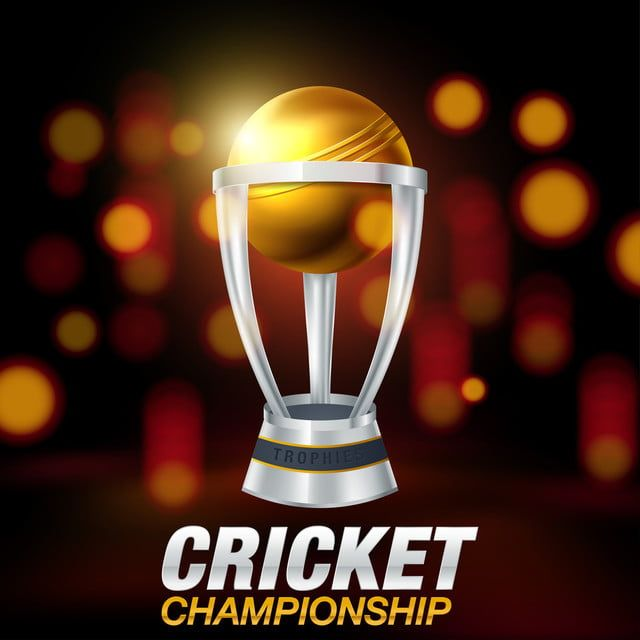

The first international cricket match was played between Canada and the United States, on 24 and 25 September 1844.[5] However, the first credited Test match was played in 1877 between Australia and England, and the two teams A competed regularly for The Ashes in subsequent years. SouthAfrica was admitted to Test status in 1889.[6] Representative cricket teams were selected to tour each other, resulting in bilateral competition. Cricket was also included as an Olympic sport at the 1900 Paris Games, where Great Britain defeated France to win the gold medal.[7] This was the only appearance of cricket at the Summer Olympics.
